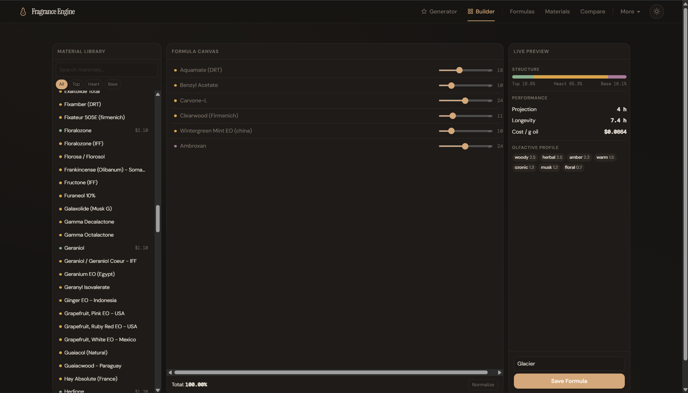
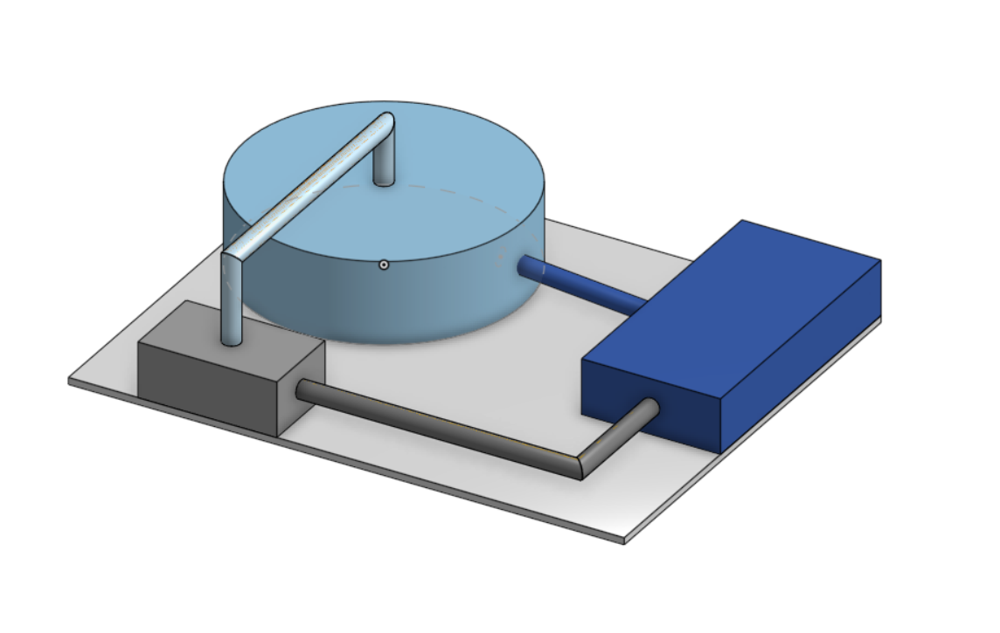

Finley Irvine
Engineering with Purpose
I'm a second-year Chemical Engineering student at Rochester Institute of Technology with a fascination for the space where scientific rigor meets creative problem-solving. My coursework spans thermodynamics, fluid mechanics, and organic chemistry. I aspire to take this coursework and apply it to long-term projects.
That curiosity led me to develop a full-stack fragrance formulation engine. This is a project with a lot of history, and I was recently awarded a $1,000 endowed scholarship and combines physical chemistry modeling with software engineering and entrepreneurship. I approach every problem the same way: understand the fundamentals, try, fail, learn, and iterate until I get a product that I am not only happy with, but ready to share with others.
I'm looking for a co-op where I can apply this blend of chemical engineering knowledge and computational thinking to real-world process challenges.
Chemical Engineers are known to be less hands-on than other related engineering fields. This imbalance inspired me to always keep myself busy with a project since arriving at RIT.
What I've Built

Engineering Principles Lab
Applied experiments in rheology, fluid flow, corrosion, heat transfer, surface tension, and reaction kinetics. Independently disassembled and reassembled a fully integrated process flow cart from a self-developed schematic — connecting piping networks, pumps, valves, and instrumentation.

Chlorobenzene Process Model
Modeled and optimized a 25,000 t/yr chlorobenzene production process using thermodynamics, reactive mass balances, and phase equilibrium analysis. Evaluated operating conditions for economic performance and environmental impact.
Onshape 3D Project
Designed and modeled a scaled-down process flow system in Onshape featuring a mixer, evaporator, and crystallizer with connecting piping networks. Built within a 20×16 ft concrete tabletop constraint with all units under the 3 ft height limit. Includes degree of freedom analysis, stream tables, and safety/ethics considerations for real-world scale-up.

Every project here started with a question I couldn't stop thinking about. The Fragrance Engine began as "can I make scent formulation computable?" This turned into a production-grade system.
Technical Toolkit
AI & Computational Tools
Engineering Tools
Lab & Process
Implementing AI within my projects has taught me many powerful tools that will only expand with time. The Fragrance Engine is an LLM-assisted application: I spend as much time as one would without the use of AI coding, to plan, gather context, and import tools to allow AI to work with me, not for me.
Where I've Worked
- Managing a community of 25 residents, providing mentorship and resources aligned with the "Live, Learn, Belong, Succeed" framework
- Coordinating and leading community-wide programs to strengthen student engagement on campus
- Founded a short-form video editing business for Instagram and TikTok
- Filmed and edited 50+ videos (~30s each) in a 2-month span using CapCut
- Drove 70,000+ total views across platforms for clients including Kate Preftakes Photography and Events by Sorrell
- Collaborated with colleagues to prepare 120+ activities and lead 40 campers through engaging summer programming over 4 seasons
These roles taught me how to lead, communicate, and deliver under pressure. Being an RA means being a reliable resource at nearly all times. Running a content business means shipping work on deadlines with paying clients. Both feed directly into how I approach engineering.
What Fascinates Me
Fragrance Science
The chemistry of scent — volatility, molecular behavior, and how physical properties translate to sensory experience.
Process Optimization
Finding the most efficient path through complex systems — from chemical processes to software architecture.
Thermodynamics
Phase equilibria, energy balances, and the fundamental rules that govern chemical systems.
Computational Tools
Building software that makes engineering intuition computable — from formulation engines to process models.
LLM-Assisted Engineering
Using large language models as engineering copilots — for code generation, data structuring, and rapid prototyping.
Scale-Up & Formulation
Translating lab-scale prototypes into repeatable, economically viable production processes.
These aren't just academic interests — they're the threads that connect everything I build. Fragrance science led to the Fragrance Engine. Thermodynamics shaped my process models. AI tools let me ship all of it at a pace that shouldn't be possible for one person.
Let's Connect
I'm looking for co-op opportunities in chemical engineering and related fields. Feel free to reach out.